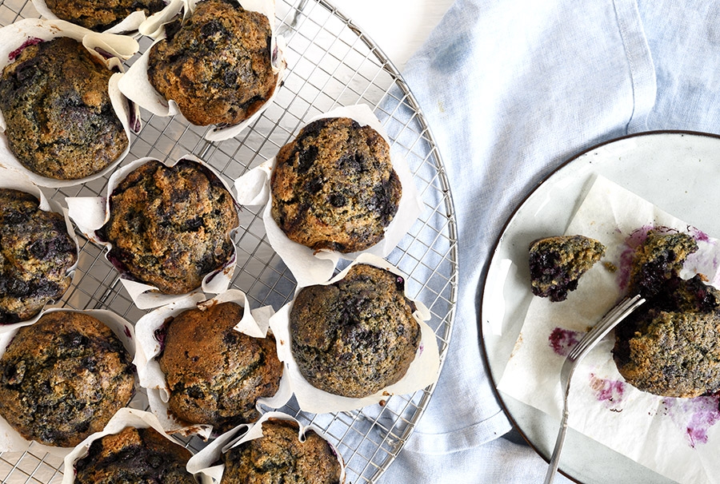
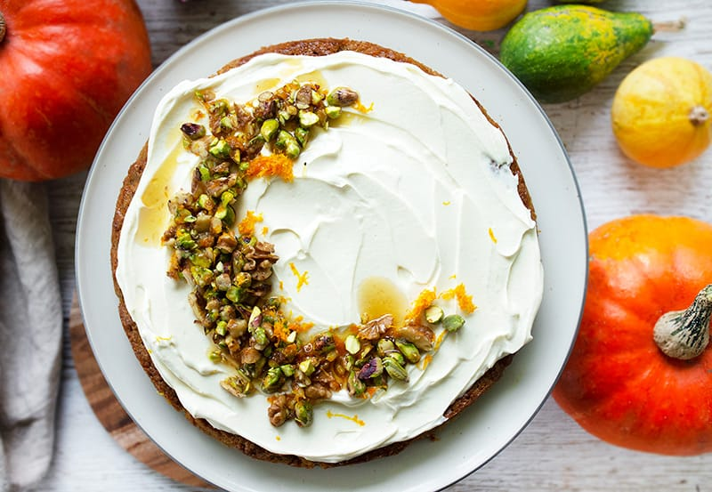
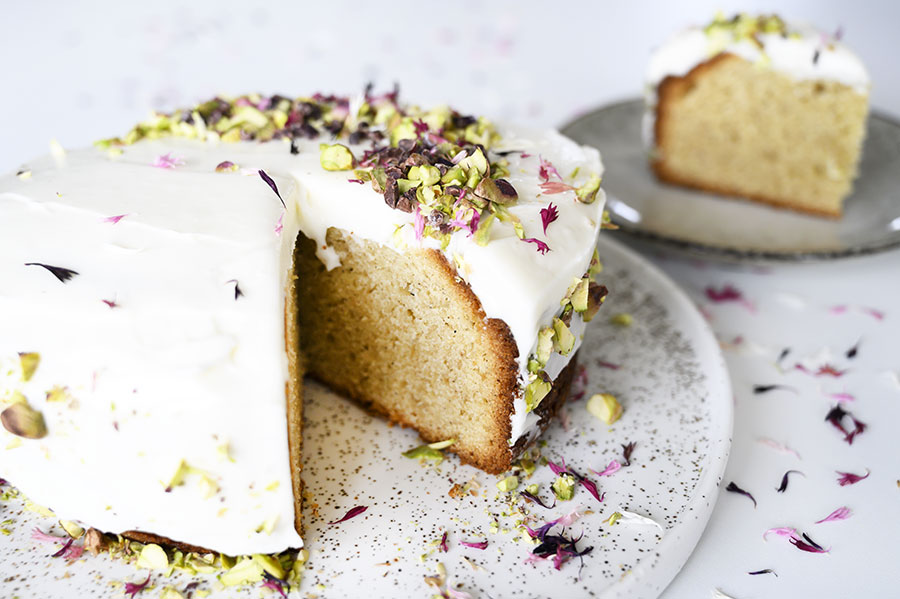

Blåbærmuffins

12 stk.
Ingredienser
- 100 g smør, blødt
- 100 g rørsukker
- 75 g brun farin
- 3 æg
- 175 g hvedemel
- 50 g hvedemel, fuldkorn
- 2 tsk bagepulver
- 1 tsk kanel
- 1/2 tsk vaniljepulver
- 1/2 tsk salt
- 225 g blåbær, frosne
Tid: 35 minutter
Fremgangsmåde
Pisk smør, rørsukker og brun farin sammen til det er luftigt. Pisk derefter æggene i lidt efter lidt.
I en skål for sig vendes mel, fuldkornsmel, bagepulver, kanel, vaniljepulver og salt godt sammen. Vend til sidst blåbær i melblandingen og rør derefter melblandingen sammen med den sammenpiskede æg, sukker og smørblanding.
Fordel dejen i 12 muffinsforme og bag i en forvarmet ovn ved 175 grader varmluft i 22-25 minutter.
Græskarkage

1 kage
Ingredienser
- 300 g hokkaido græskar, groftrevet
- 175 g smør, stuetempereret
- 100 g sukker
- 75 g brun farin
- 175 g hvedemel
- 3 æg
- 2 tsk bagepulver
- 1 tsk kanel
- 1/2 tsk kardemomme, stødt
- 1 knivspids nellike, stødt
- 1/2 tsk salt
- Frosting
- 200 g flødeost, naturel
- 3 spsk ahornsirup
- 1 øko appelsin, fintrevet skal
- 50 g valnødder, hakkede
- 30 g pistaciekerner, hakkede
Tid: 60 minutter
Fremgangsmåde
Pisk smør, sukker og brun farin sammen, rør æg og groftrevet græskar i dejen. I en anden skål blandes mel, bagepulver, krydderier og salt.
Rør melblandingen i skålen med smør, sukker, græskar og æg-blandingen.
Fordel dejen i en smurt springform (ca. 24 cm i diameter), evt. beklædt med bagepapir og bag græskarkagen i en forvarmet ovn ved 175 grader varmluft i cirka 35-40 minutter.
Græskarkagen køles helt af, inden den pyntes med frosting.
Frosting
Rør flødeost med ahornsirup.
Smør frostingen på kagen, drys med appelsinskal, grofthakkede valnødder og pistaciekerner. Dryp en smule ahornsirup over, inden servering.
Opskriften er til 6 personer
Kardemommekage

1 kage
Ingredienser
- 220 g rørsukker
- 150 g smør, blødt
- 200 g marcipan
- 4 æg
- 225 g hvedemel
- 2 tsk bagepulver
- 2 tsk kardemomme, stødt
- 1 tsk vaniljepulver
- Glasur og pynt
- 200 g flødeost, naturel
- 150 g flormelis
- 1 spsk kakaonibs
- 1 spsk pistaciekerner
Tid: 1 time og 15 minutter
Fremgangsmåde
Pisk smør og sukker sammen til en jævn masse. Skær marcipanen i tern og pisk den i sammen med æg til blandingen er jævn.
Rør mel, kardemomme, vaniljepulver og bagepulver sammen i en ren skål, og rør melblandingen i dejen.
Fordel dejen i en smurt springform, min er ca 22 cm i diameter.
Bag kagen i en forvarmet ovn ved 175 grader varmluft i cirka 50-60 minutter.
Opskriften er til 8 personer